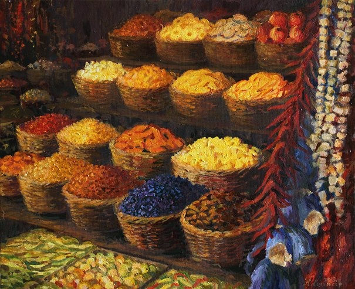

Фрукты, зерновые и травы
Северные леса, в которых практически всегда довольно тепло и влажно, содержат большое количество различных видов деревьев, растений, кустарников, папоротников и тому подобного. Тропический климат также способствует большому распространению различных лиан и мхов — всё это делает леса похожими на парад различных видов растительности: увидеть рядом два одинаковых вида дерева или папоротника — очень большая редкость.
На юге, среди каменистых и песчаных пустынь, растительность бывает только на побережье: там в основном находятся пальмы и подобные им растения. Дальше от прибрежных районов, где куда меньше влаги, бывают только кактусы и разные коренья, питающиеся от подземных вод.
В основном поэдрумцы питаются фруктами, хлебом и мясом и рыбой. Выращиваются завезённые зерновые культуры, овощи практически не выращиваются и в пищу не используются.

Основные фрукты
Абрикос — округлый жёлтый фрукт; употребляется свежим и сушёным, из него варят водку, используют в косметике. Авокадо — плод с жёсткой кожицей, мякоть напоминает смесь сливочного масла с пюре из зелени. Ананас — крупный плод с твёрдой оболочкой, очень сладкий и полезный для пищеварения. Апельсин — самый популярный фрукт Поэдрума, играет роль яблок в умеренном климате. Аргея — сочные зелёные ягоды с мягкими шипами, слегка кисловатые. Банан — длинные плоды с мягкой сладкой мякотью, пока деликатес. Бергамот — используется для отдушки чаёв, некоторые любят кисловатую мякоть. Виноград «восточного» сорта — крайне сладкий, сушащий рот; соки и алкоголь популярны. Гранат — плод с множеством семян в сочной оболочке. Инжир — свежий, сушёный и консервированный; варят варенье. Кокос — редкий деликатес на побережье. Корень песков — сочные клубни, еда бедняков. Персики — сладкие, из косточек делают масло. Лемон — кислый, как приправа. Манго — ароматная сочная мякоть. Орпал — острые листья-приправа. Терма («глаз пустыни») — сочная ягода, похожа на крыжовник. Хурма — сладкая, из неё делают пиво. Фейхоа — вкус земляники, ананаса и киви. Филва — шарообразный плод с прозрачной оболочкой и соком внутри. Финики — второй по популярности фрукт, карамельный вкус.
Зерновые культуры
Ещё сотни лет назад завезли семена ячменя, пшеницы, гороха, рапса, кукурузы, риса и прочего, однако далеко не все прижились. Сейчас в основном выращивается только пшеница, рапс и кукуруза. Пшеницу и кукурузу используют в пище люди, рапс в основном скармливают скоту. Фрукты и хлеб составляют большую часть рациона поэдрумцев; мясо едят, но из-за скудности фауны оно достаётся в основном членам Ордена и сословию воинов.
География Мериона · Поэдрум · Растительная пища